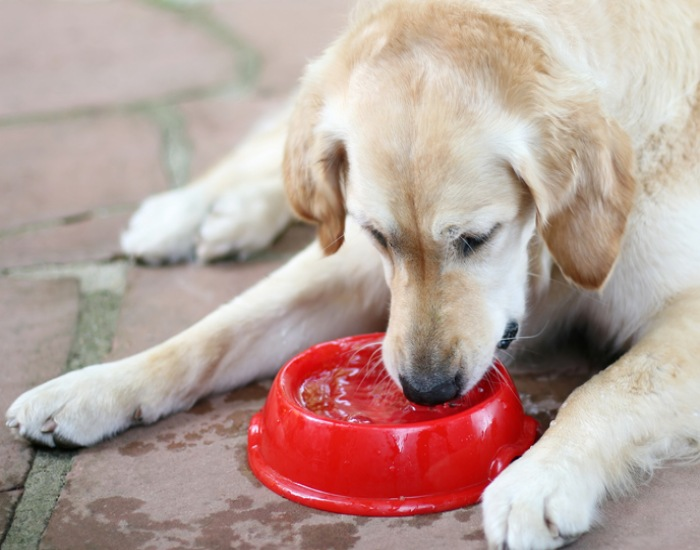
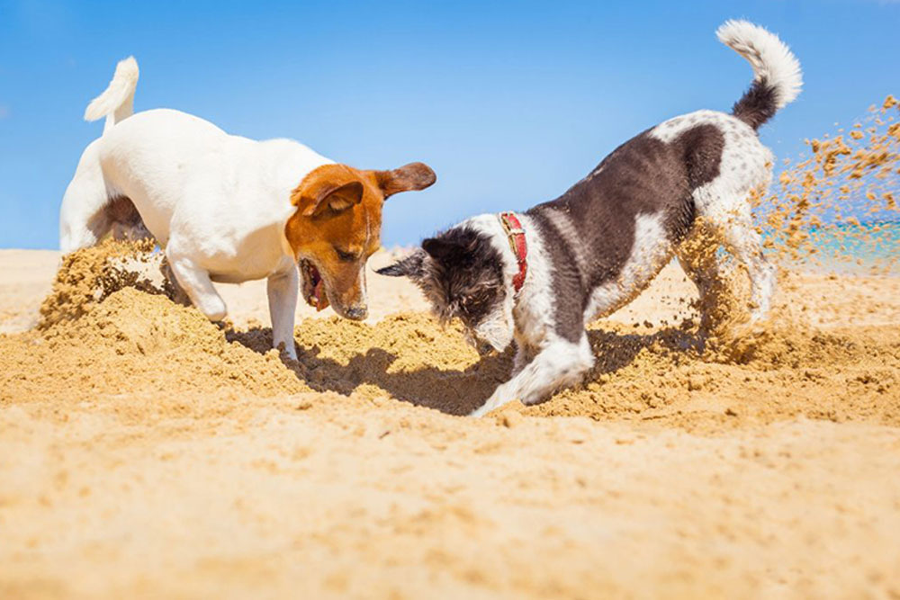

Dogs: Your Friends for Life
Dogs are often called “man’s best friend” for a reason. They offer unconditional love, loyalty, and companionship that few other relationships can match. Whether they’re greeting you at the door with a wagging tail or curling up beside you after a long day, dogs have an incredible ability to make people feel loved and valued.
Beyond their affection, dogs also play an important role in improving our physical and mental well-being. Taking them for walks encourages exercise, while their joyful energy can lift our spirits and reduce stress. Dogs are also known to sense human emotions, providing comfort when we’re sad or anxious.
Each dog has its own personality — some are playful and energetic, while others are calm and protective — but all share a deep connection with their owners. They teach us about patience, empathy, and the simple happiness that comes from companionship.
In every way, dogs remind us what it means to love and be loved. They aren’t just pets; they’re family — loyal friends for life.
Foods Dogs Should Avoid
Some foods that seem harmless can actually make your pup sick.
Why Dogs Tilt Their Heads
Learn why your furry friend gives you that adorable curious look.

Why Dogs Bark
Barking is more than noise — it’s your dog’s way of talking to you.

Why Dogs Sleep So Much
Your dog’s naps are important for health and happiness.
Why Dogs Need Water
Hydration keeps your dog’s organs healthy and supports digestion.
Why Dogs Dig
Discover why your pup loves to dig and how to manage the behavior.